第11讲 章节复习专题：有理数及其运算
第11讲 章节复习专题：有理数及其运算
(14类热点题型讲练)

目录
【考点一 相反意义的量】 1
【考点二 求一个数的相反数、绝对值】 2
【考点三 绝对值的非负性】 3
【考点四 用科学记数法表示绝对值大于1的数】 5
【考点五 含乘方的有理数四则混合运算】 6
【考点六 有理数的混合运算中错题复原问题】 9
【考点七 带“非”字的有理数的分类】 13
【考点八 用数轴上的点表示有理数】 15
【考点九 根据点在数轴的位置判断式子的正负】 18
【考点十 有理数的除法中绝对值之分类讨论问题】 19
【考点十一 新定义型有理数混合运算】 23
【考点十二 有理数混合运算中的实际应用】 25
【考点十三 数轴上折叠探究问题】 28
【考点十四 利用点在数轴上的几何意义化简绝对值】 32

【考点一 相反意义的量】
例1.（2024·湖北宜昌·模拟预测）若长江水位升高
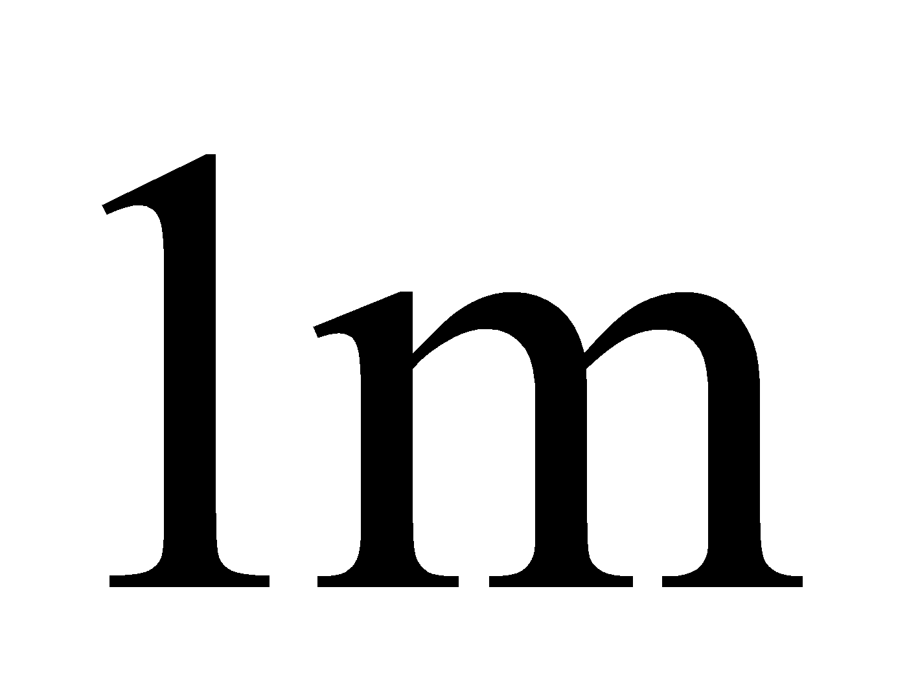
时水位变化记作 ，那么水位下降
，那么水位下降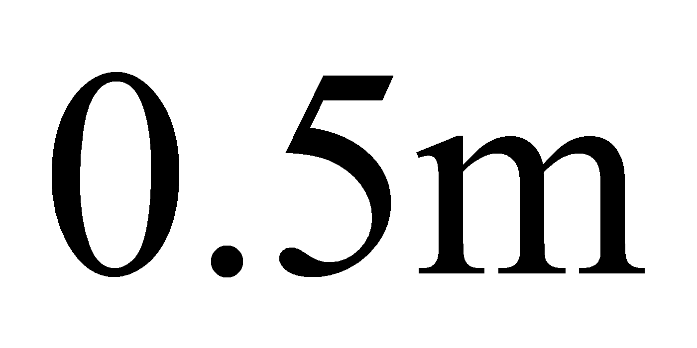
时水位变化记作（ ）A． B． C．
B． C． D．
D．
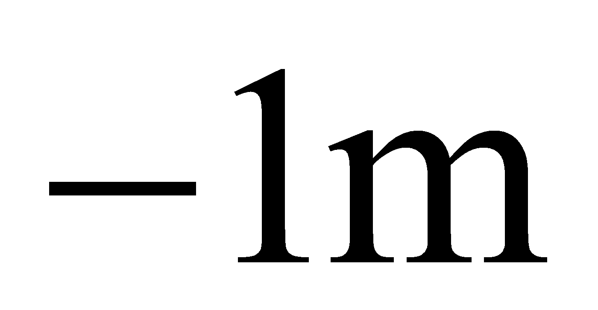
【答案】C
【分析】本题考查了正数和负数表示相反意义的量，根据水位升高记为正，则水位下降记为负即可得出答案．
【详解】解：若长江水位升高时水位变化记作，那么水位下降时水位变化记作，
故选：C ．
巩固训练
1.（2024·陕西榆林·三模）两千多年前，中国人就开始使用负数．若某仓库运进小麦3吨，记为 吨，那么仓库运出小麦2吨应记为（ ）
吨，那么仓库运出小麦2吨应记为（ ）
A． 吨 B．
吨 B． 吨 C．
吨 C． 吨 D．
吨 D． 吨
吨
【答案】C
【分析】本题考查了相反意义的量，熟练掌握正负数的意义是解答本题的关键．运进小麦3吨，记为吨，可得运进为正，运出为负，直接得出结论即可．
【详解】解：∵运进小麦3吨，记为吨，
∴运出小麦2吨应记为吨．
故选C．
2.（23-24九年级下·海南省直辖县级单位·阶段练习）我国部分地区的日温差较大，“早穿棉袄午穿纱”这句谛语描绘的就是某地这种奇妙的气温变化现象．若某市某日上午温度上升 记作
记作
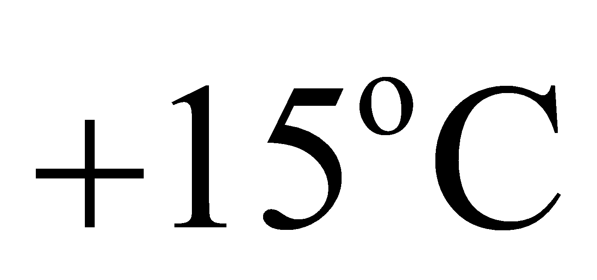
，那么傍晚温度下降 记作（ ）
记作（ ）A． B．
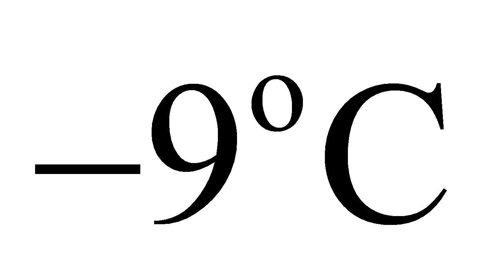
C． D．
D．【答案】B
【分析】本题考查正数和负数，理解具有相反意义的量是解题的关键．正数和负数是一组具有相反意义的量，据此即可求得答案．
【详解】解：温度上升
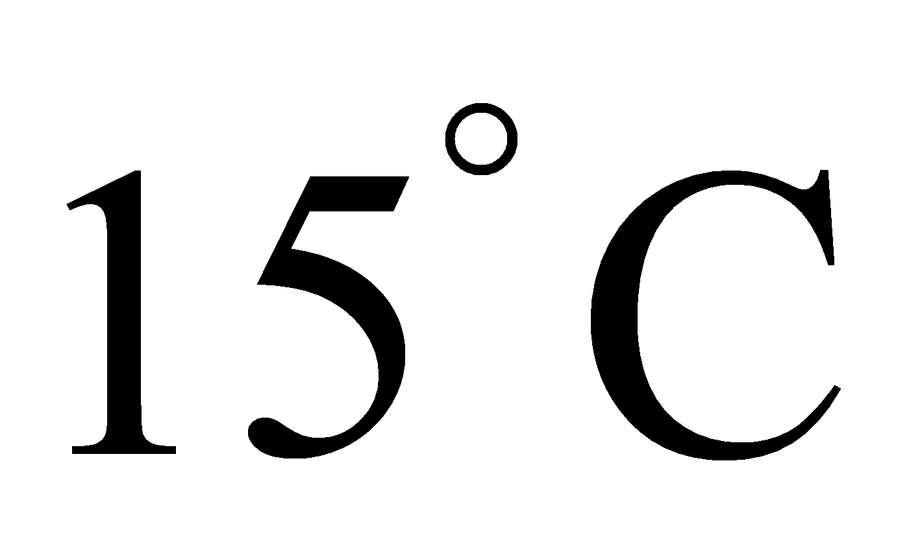
记作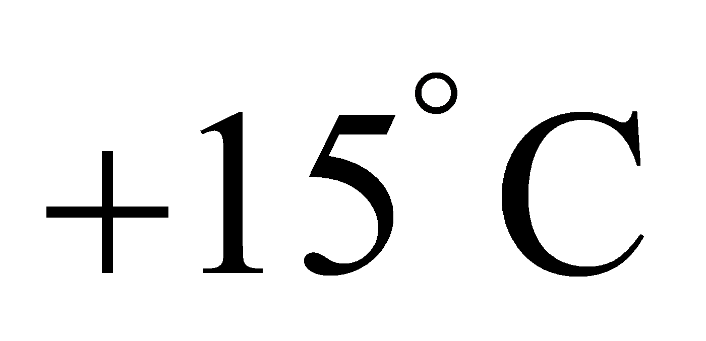
，那么傍晚温度下降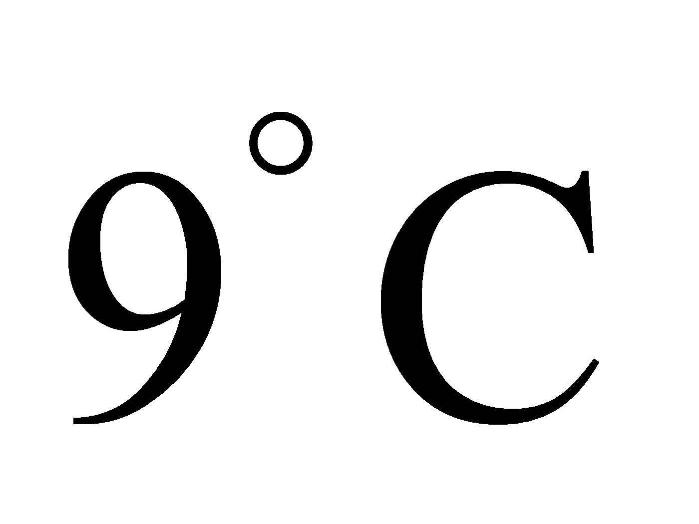
记作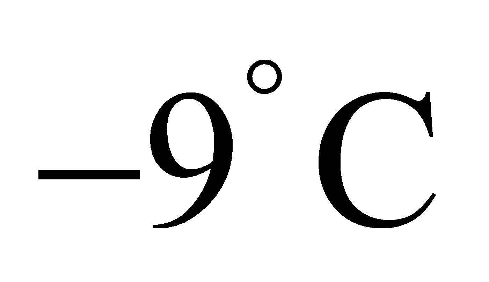
，故选：B．
3.（2024·湖北荆州·模拟预测）某地冬季里某一天的气温为 ，那么“”的含义是（ ）
，那么“”的含义是（ ）
A．零下3摄氏度 B．零上3摄氏度
C．降低3摄氏度 D．升高3摄氏度
【答案】A
【分析】本题考查了相反意义的量， 生活中习惯上用正数表示零上温度，用负数表示零下温度，掌握“正数和负数是一对具有相反意义的量”是解题的关键．
【详解】“”的含义是零下3摄氏度．
故选：A．
【考点二 求一个数的相反数、绝对值】
例2．（2024·四川达州·中考真题）有理数2024的相反数是（ ）
A．2024 B． C．
C． D．
D．
【答案】B
【分析】本题主要考查了求一个数的相反数，只有符号不同的两个数互为相反数，0的相反数是0，据此求解即可．
【详解】解：有理数2024的相反数是，
故选：B．
巩固训练
1.（23-24七年级上·浙江金华·期中） 的绝对值是 ，
的绝对值是 ， 的相反数是 ．
的相反数是 ．
【答案】 3 
【分析】本题主要考查绝对值与相反数的定义，熟练掌握绝对值与相反数的定义是解题的关键．根据绝对值与相反数的定义即可得到答案．
【详解】解：的绝对值是3，的相反数是，
故答案为：3，.
2.（23-24七年级上·广东惠州·阶段练习） 的相反数为 ；
的相反数为 ； 的绝对值是 ；绝对值是2的数是 ．
的绝对值是 ；绝对值是2的数是 ．
【答案】
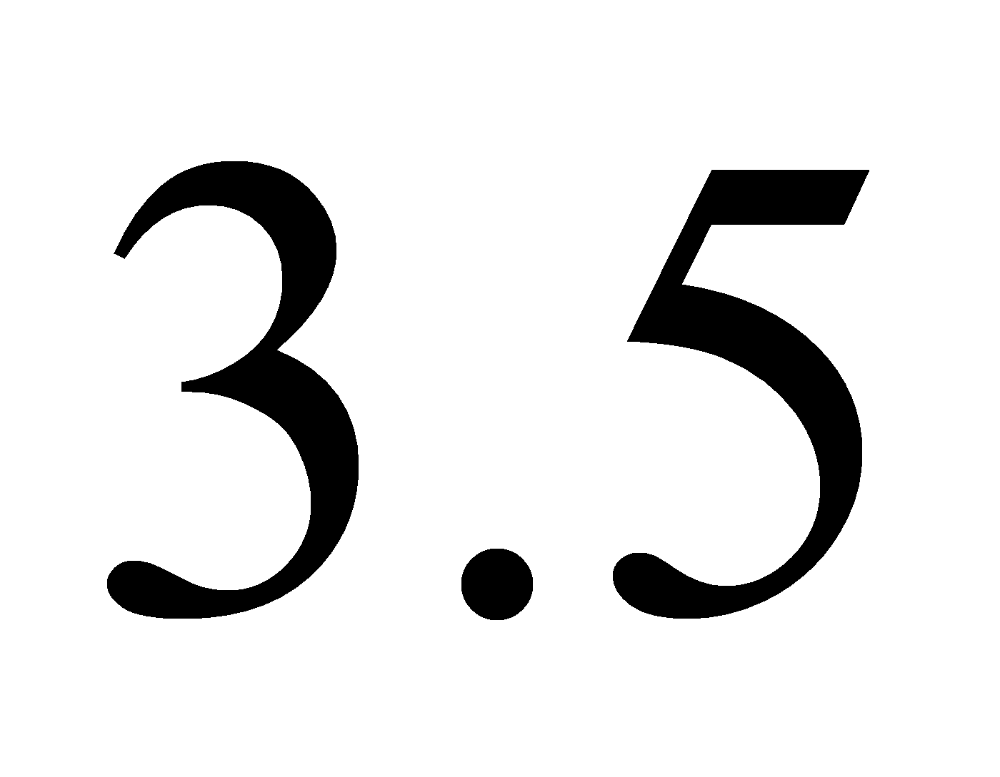
5
【分析】本题主要考查了绝对值和相反数．根据相反数的定义：如果两个数只有符号不同，数字相同，那么这两个数互为相反数，0的相反数是0；绝对值的定义：正数的绝对值是它本身，负数的绝对数是它的相反数，0的绝对值是0，进行求解即可
【详解】解：的相反数为；的绝对值是5；绝对值是2的数是．
故答案为：；5，．
3.（23-24七年级上·广东广州·期中）（1）
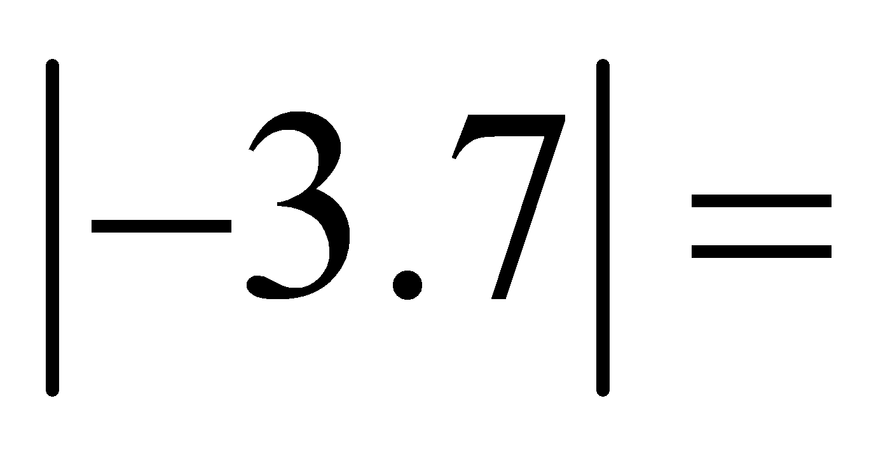
；（2） ；（3）
；（3） ；（4）
；（4）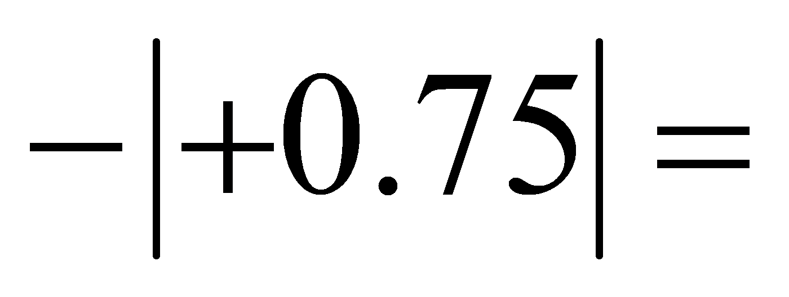
．【答案】
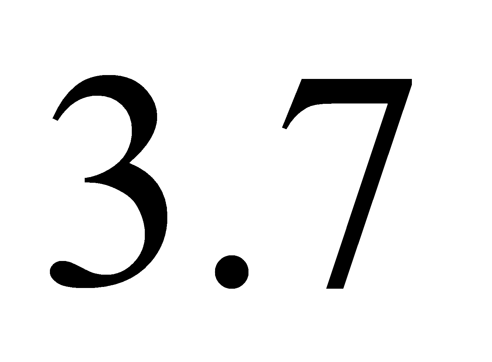
0

【分析】根据相反数的定义、绝对值的性质计算可得．
【详解】 ，
，
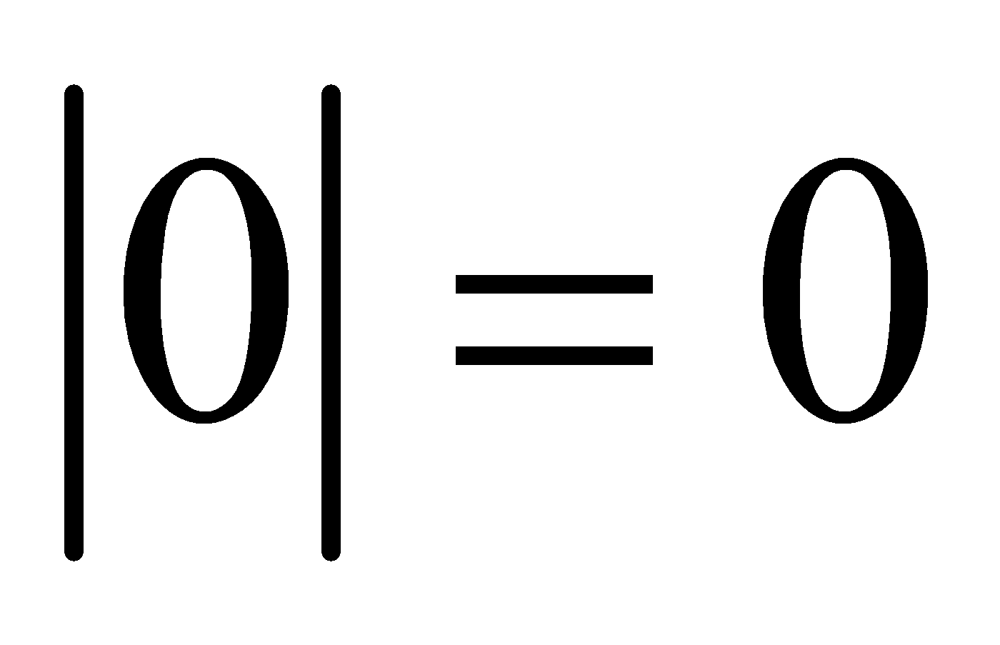
， ，
，
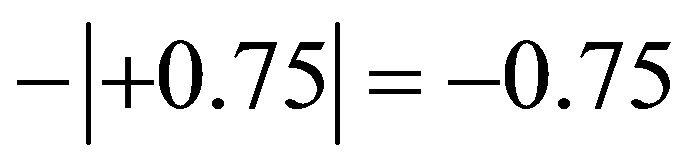
，故答案为：；0；；；
【点睛】本题主要考查绝对值计算，解题的关键是熟练掌握绝对值的定义，正数的绝对值是是正数，负数的绝对值是它的相反数，零的绝对值是零．
【考点三 绝对值的非负性】
例3. （23-24六年级下·全国·假期作业）若 ，则
，则 ，
， ．
．
【答案】 

【分析】本题考查了绝对值的非负性；根据非负数的性质可得 ，即可求解．
，即可求解．
【详解】因为，且 ，
， ，
，
所以，所以 ．
．
故答案为：，．
巩固训练
1.（23-24七年级上·江苏泰州·阶段练习）已知b、c满足 ，则
，则 的值是 ．
的值是 ．
【答案】 /
/ /
/
【分析】本题考查了绝对值的性质，根据，得到 ,
,
代入计算即可．
【详解】∵，
∴，
∴
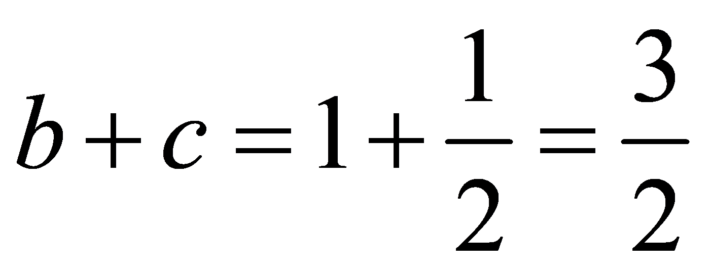
，故答案为： 或
或 或
或 ．
．
2.（23-24六年级下·黑龙江哈尔滨·期中）已知 为有理数，则
为有理数，则 的最小值为 ．
的最小值为 ．
【答案】4
【分析】本题考查了绝对值的非负性，解题的关键是掌握正数的绝对值是它本身，负数的绝对值是它的相反数，0的绝对值是0．根据绝对值的非负性即可解答．
【详解】解：∵ ，
，
∴ ，
，
∴的最小值为4，
故答案为：4．
3.（23-24七年级上·山东青岛·阶段练习）a是最大的负整数，且a、b、c满足 ．那么a＝ ，b＝ ，c＝ ．
．那么a＝ ，b＝ ，c＝ ．
【答案】 1 5
【分析】本题考查了绝对值非负性的应用，先根据已知条件得到a的值，然后根据绝对值的非负性得到b、c的值，掌握绝对值的非负性是解题的关键．
【详解】解：∵a是最大的负整数，
∴ ，
，
∵，
∴ ，
，
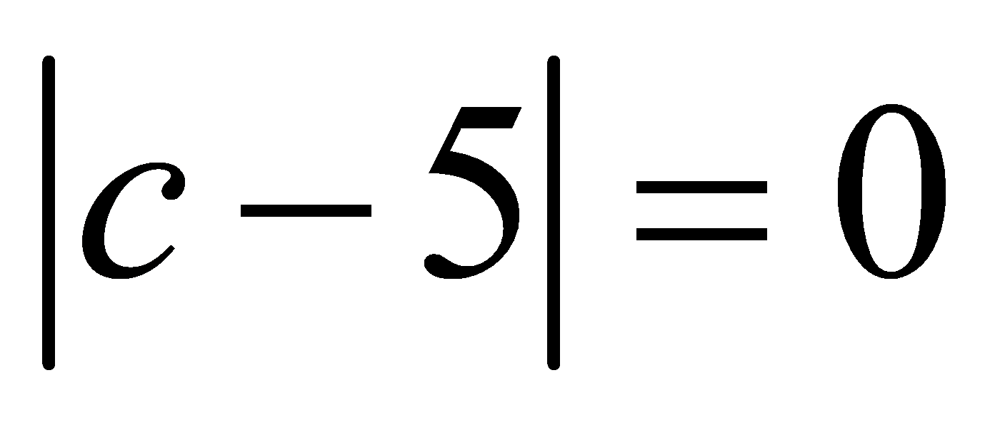
，∴
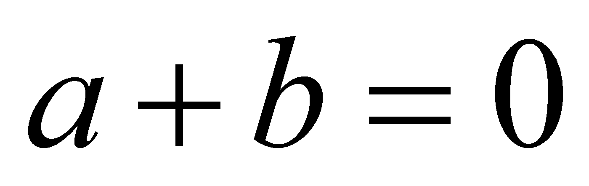
， ，
，∴ ，，
，，
解得： ，
，
∴
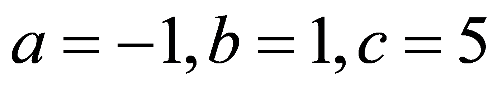
，故答案为： ．
．
【考点四 用科学记数法表示绝对值大于1的数】
例4. （2023春·江西南昌·九年级校考阶段练习）我国神舟十三号载人飞船的起飞推力为
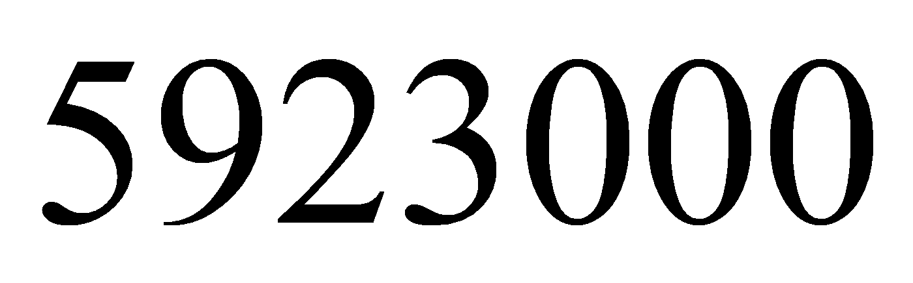
牛．将用科学记数法表示应为 ．【答案】
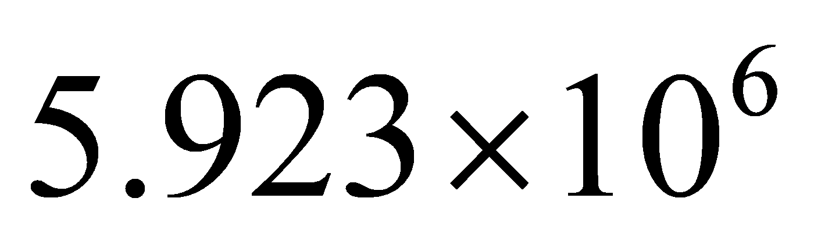
【分析】科学记数法的表示形式为 的形式，其中
的形式，其中
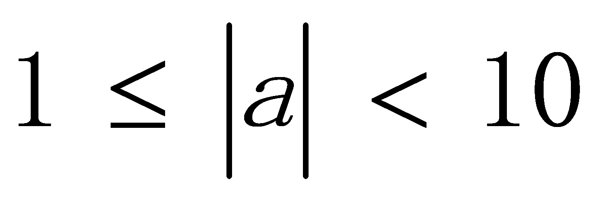
，n为整数．确定n的值时，要看把原数变成a时，小数点移动了多少位，n的绝对值与小数点移动的位数相同．当原数绝对值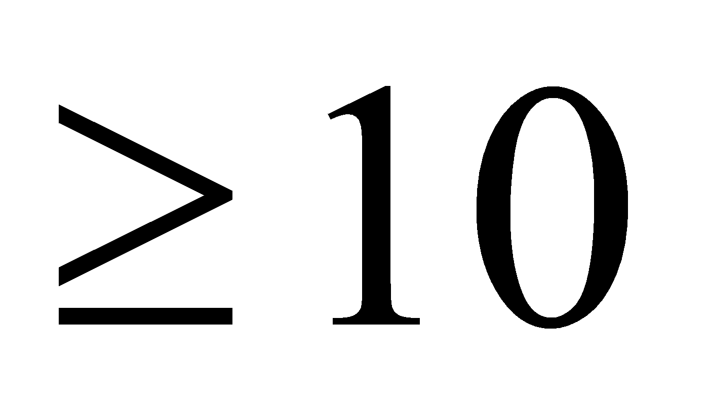
时，n是正整数；当原数的绝对值 时，n是负整数．
时，n是负整数．【详解】解：
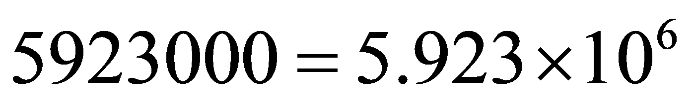
．故答案为：．
【点睛】此题考查科学记数法的表示方法．科学记数法的表示形式为的形式，其中，n为整数，表示时关键要正确确定a的值以及n的值．
巩固训练
1.（2023秋·山西太原·七年级校考期末）据国家卫健委6月20日通报，截至2021年6月19日，31个省（自治区、直辖市）和新疆生产建设兵团累计报告接种新冠病毒疫苗 万剂次．其中，万用科学记数法表示为（ ）
万剂次．其中，万用科学记数法表示为（ ）
A．
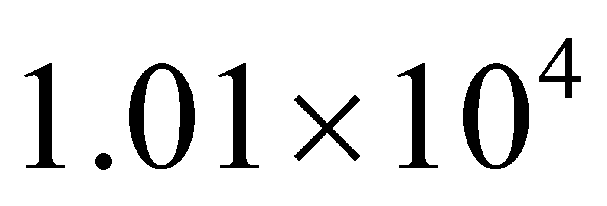
B．
C． D．
D．
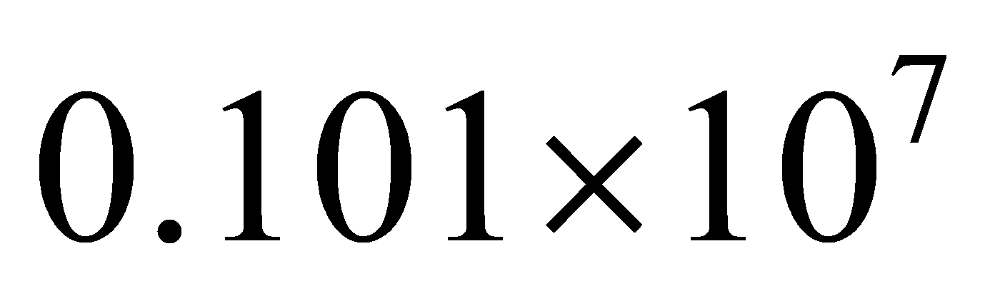
【答案】B
【分析】用科学记数法表示较大的数时，一般形式为，其中
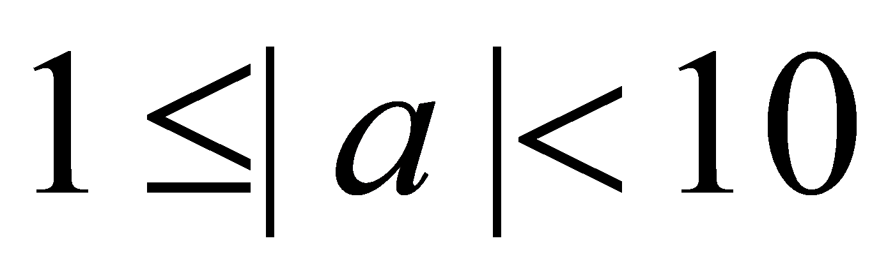
， 为整数．
为整数．【详解】解：万
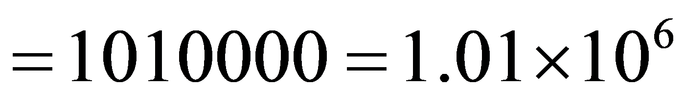
．故选：B．
【点睛】本题考查了科学记数法，科学记数法的表示形式为的形式，其中，为整数．确定的值时，要看把原来的数，变成 时，小数点移动了多少位，的绝对值与小数点移动的位数相同．当原数绝对值
时，小数点移动了多少位，的绝对值与小数点移动的位数相同．当原数绝对值 时，是正数；当原数的绝对值
时，是正数；当原数的绝对值
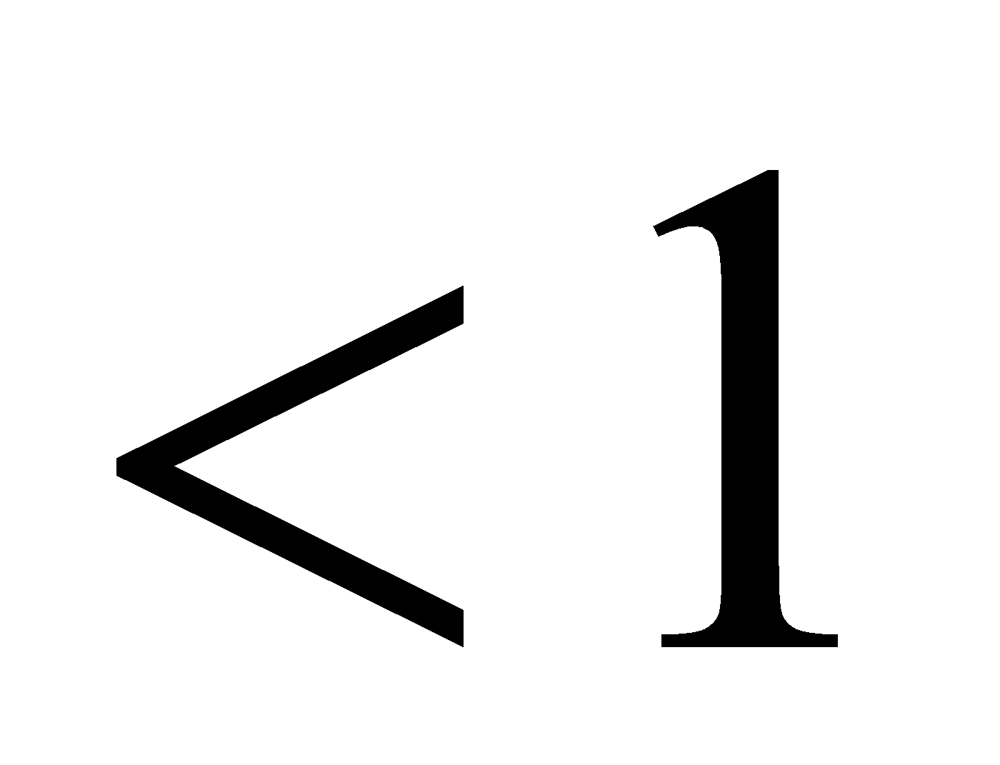
时，是负数，确定与的值是解题的关键．2.（2023秋·山西太原·七年级校考期末）2016年5月下旬，中国大数据博览会在贵阳举行，参加此次大会的约有 人，将用科学记数法表示为 ．
人，将用科学记数法表示为 ．
【答案】
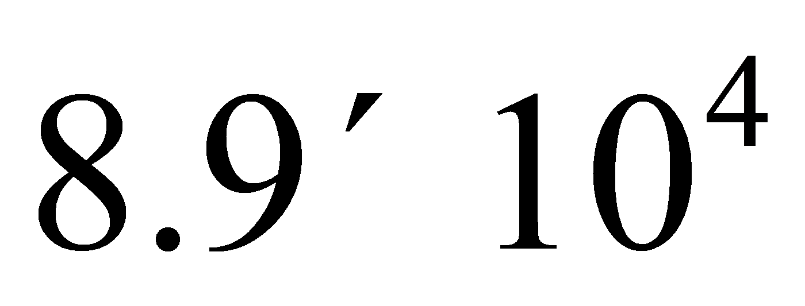
【分析】科学记数法的表现形式为的形式，其中，n为整数，确定n的值时，要看把原数变成a时，小数点移动了多少位，n的绝对值与小数点移动的位数相同，当原数绝对值大于等于10时，n是正数，当原数绝对值小于1时n是负数；由此进行求解即可得到答案．
【详解】解：
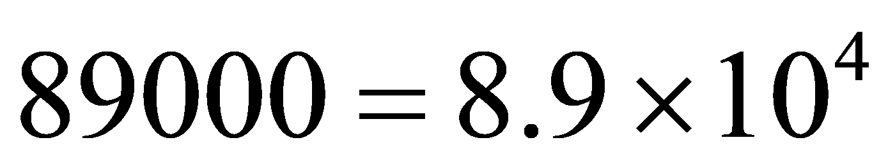
,故答案为：．
【点睛】本题主要考查了科学记数法，解题的关键在于能够熟练掌握科学记数法的定义．
3.第二届“一带一路”国际合作高峰论坛于
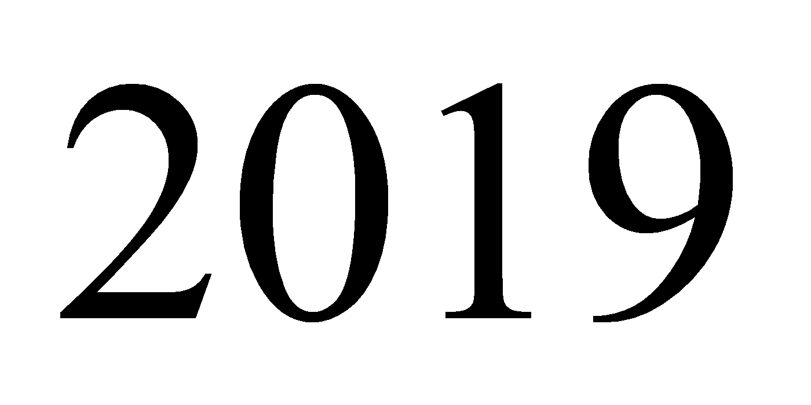
年4月 日至
日至 日在北京召开，“一带一路”建设进行5年多来，中资金融机构为“一带一路”相关国家累计发放贷款约
日在北京召开，“一带一路”建设进行5年多来，中资金融机构为“一带一路”相关国家累计发放贷款约 亿元，重点支持了基础设施、社会民生等项目．数据亿用科学记数法表示为 ．
亿元，重点支持了基础设施、社会民生等项目．数据亿用科学记数法表示为 ．【答案】
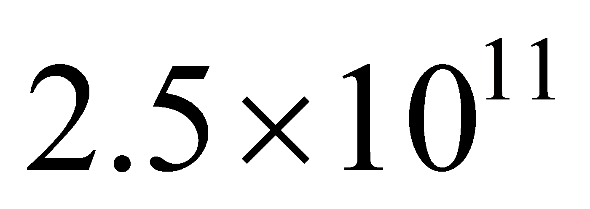
【分析】科学记数法的表现形式为的形式，其中，n为整数，确定n的值时，要看把原数变成a时，小数点移动了多少位，n的绝对值与小数点移动的位数相同，当原数绝对值大于等于10时，n是正数，当原数绝对值小于1时n是负数；由此进行求解即可得到答案．
【详解】解：亿
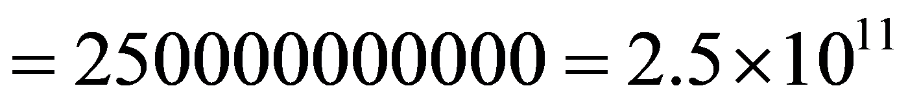
，故答案为：．
【点睛】本题主要考查了科学记数法，解题的关键在于能够熟练掌握科学记数法的定义．
【考点五 含乘方的有理数四则混合运算】
例5. 计算：
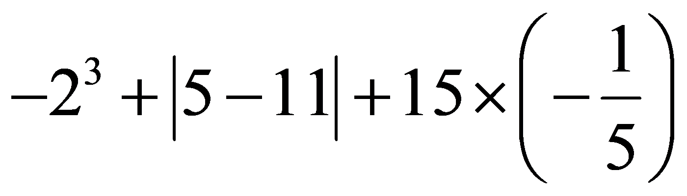
【答案】
【分析】按照先计算乘方和绝对值，再计算乘法，最后计算加减法的运算顺序求解即可．
【详解】解：
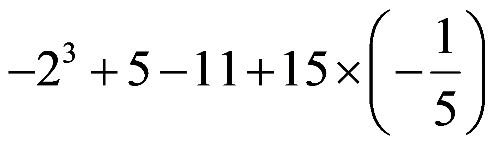
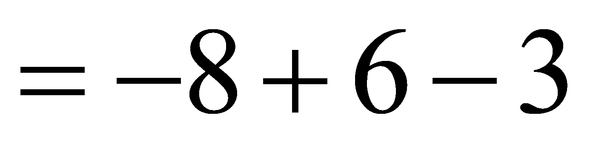
 ．
．【点睛】本题主要考查了含乘方的有理数混合计算，熟知相关计算法则是解题的关键．
巩固训练
1.（2023秋·陕西渭南·七年级统考期末）计算：
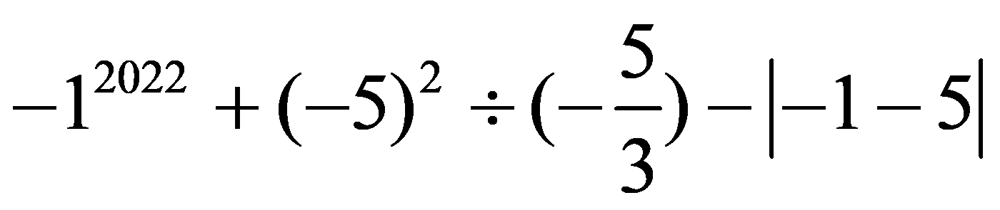
．【答案】
【分析】根据有理数的混合运算法则求解即可．
【详解】原式
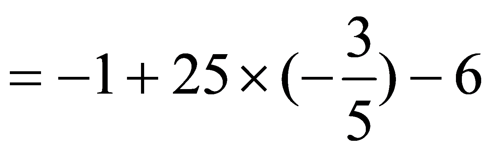
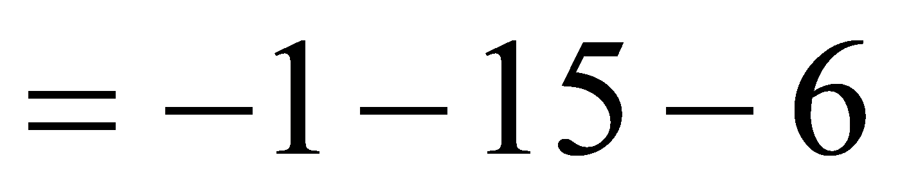
 ．
．【点睛】本题考查了有理数的混合运算，解题的关键是掌握运算法则和运算顺序．
2.（2023·全国·七年级假期作业）计算：
(1) ； (2)
； (2) ．
．
(3) ； (4)
； (4) ．
．
【答案】(1)
(2)
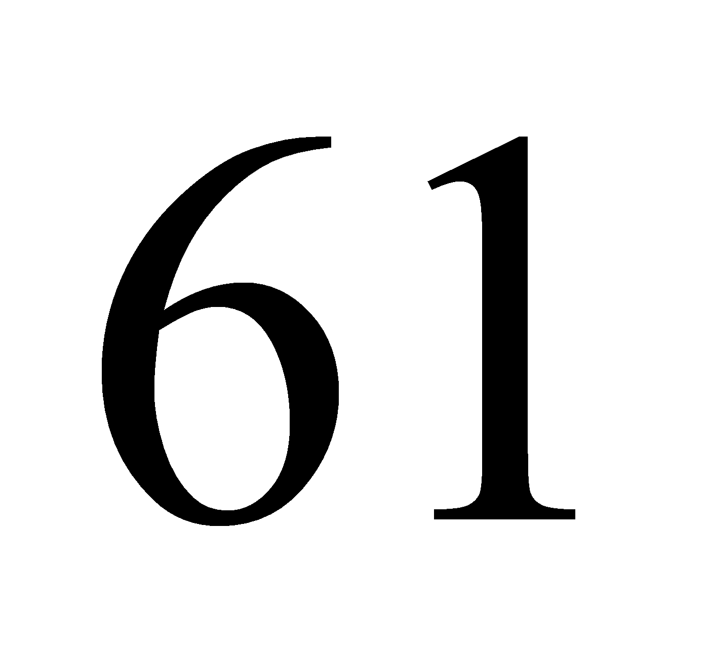
(3)
(4)
【分析】（1）根据有理数的乘法运算，加减法运算，乘法分配律即可求解；
（2）根据含有乘方的有理数运算法则即可求解；
（3）根据含有乘方的有理数的混合运算法则即可求解；
（4）根据含有乘方的有理数的混合运算法则即可求解．
【详解】（1）解：
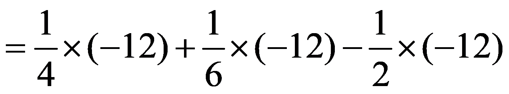
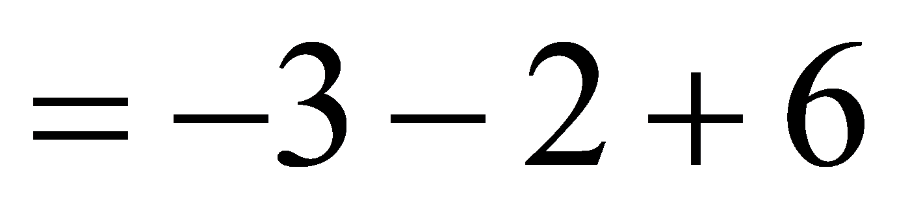
 ．
．
（2）解：
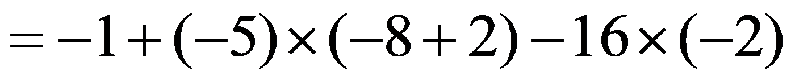
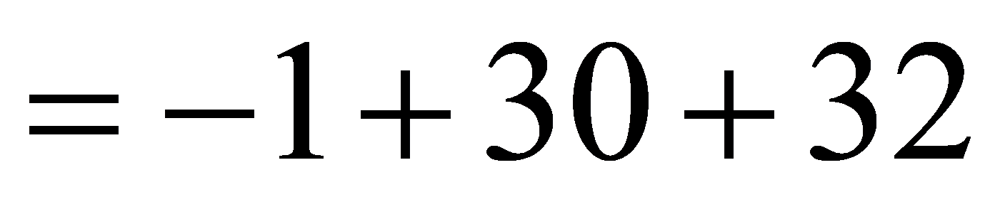
 ．
．
（3）解：
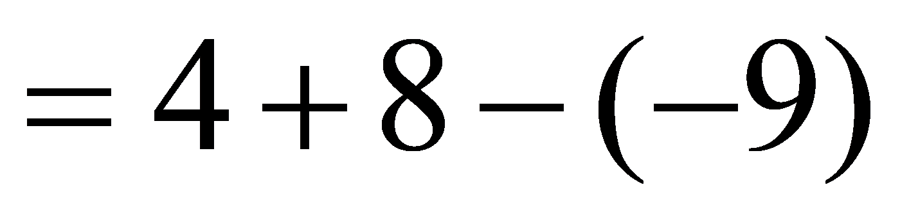
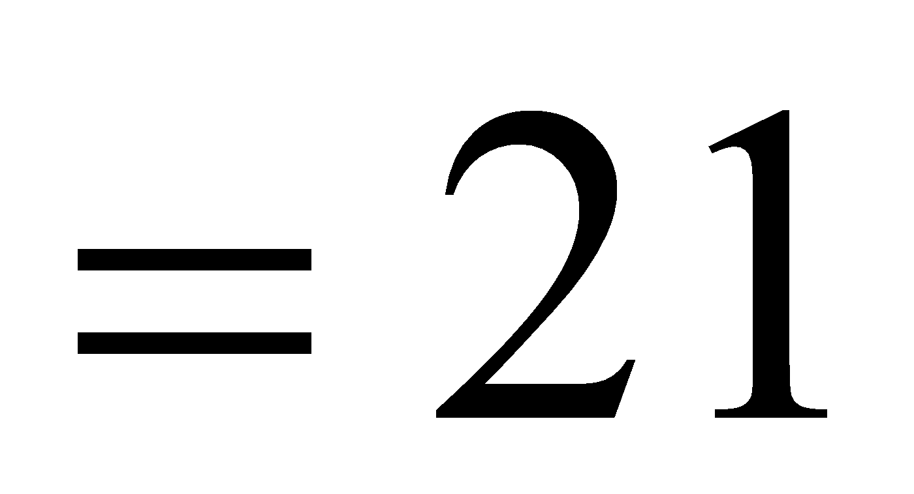
．（4）解：
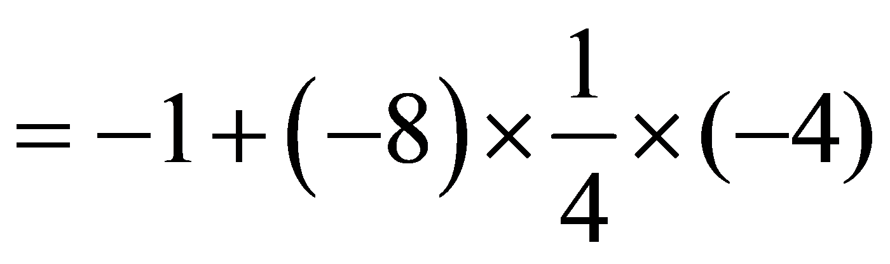
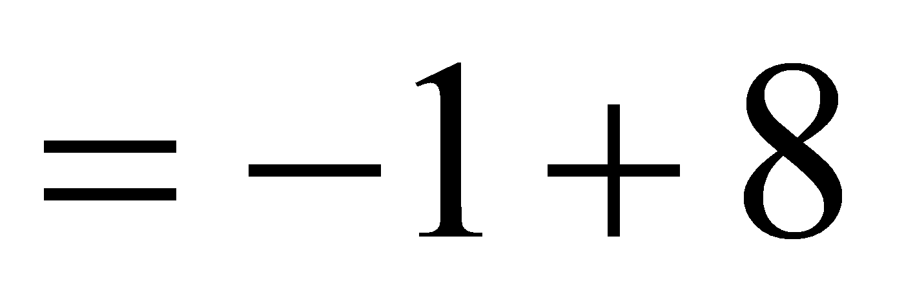
 ．
．
【点睛】本题主要考查有理数的混合运算，掌握乘方的运算法则，有理数混合运算法则是解题的关键．
3．（23-24六年级下·全国·假期作业）计算下列各题：
(1)
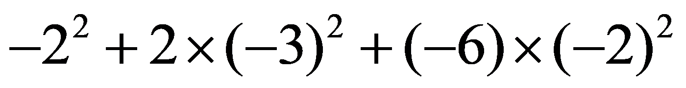
(2)
(3)
(4)
【答案】(1)
(2)
(3)
(4)
【分析】本题主要考查含乘方的有理数混合运算，以及绝对值化简，熟练掌握有理数的混合运算法则是解题的关键．
（1）先算乘方，然后再进行有理数的混合运算即可；
（2）先算乘方和括号，然后再根据有理数的混合运算法则计算，即可解题；
（3）先算乘方和括号，然后再根据有理数的混合运算法则计算，即可解题；
（4）先算乘方、括号、以及绝对值化简，然后再根据有理数的混合运算法则计算，即可解题．
【详解】（1）解：，
，
 ；
；
（2）解：，
 ，
，
 ；
；
（3）解：，
，
，
 ；
；
（4）解：，
，
，
．
【考点六 有理数的混合运算中错题复原问题】
例6. （2023秋·山东东营·六年级统考期末）课代表发下作业本之后，小刚同学发现有一个题做错了，检查了多遍也没有找出错误的原因，你能帮他纠错吗？
原题是：计算：
这是小刚的计算过程：
解：原式 第一步
第一步
第二步
 第三步
第三步
 ． 第四步
． 第四步
观察小刚的计算过程回答下列问题：
(1)小刚在进行计算第一步时运用了______律；
(2)他在计算中出现了错误，你认为他在第______步出错了？
(3)请你给出正确的解答过程．
【答案】(1)乘法分配
(2)二
(3)见解析
【分析】（1）观察运算过程可知第一步运用了乘法分配律；
（2）观察运算过程可知第二步运用了除法分配律，而除法没有分配律，由此即可得到答案；
（3）根据有理数四则混合计算法则求解即可．
【详解】（1）解：由题意得，小刚在进行计算第一步时运用了乘法分配律，
故答案为：乘法分配；
（2）解：由题意得，在第二步的时候，运用了除法的分配律，而除法没有分配律，从而导致运算结果错误，
故答案为：二；
（3）解：
．
【点睛】本题主要考查了有理数四则混合计算，有理数乘法分配律，熟知相关计算法则是解题的关键，注意除法没有分配律．
巩固训练
1.在计算 时，小明的解法如下：
时，小明的解法如下：
解：原式 （第一步）
（第一步）
（第二步）
 （第三步）
（第三步）
回答：
(1)小明的解法是错误的，主要错在第_______步，错因是___________；
(2)请在下面给出正确的解答过程．
【答案】(1)一，同级运算没有按照从左到右的顺序依次进行运算
(2)见解析
【分析】（1）观察小明的计算过程可以发现，第一步没有按照运算顺序计算，所以错误；
（2）按照有理数混合运算顺序和法则计算即可．
【详解】（1）解：通过观察小明的计算过程发现，第一步在计算乘除的同级运算时，没有按照从左到右的顺序依次计算导致错误，
故答案为：一，同级运算没有按照从左到右的顺序依次进行运算；
（2）解：
．
【点睛】本题主要考查了有理数的四则混合计算，掌握有理数的混合运算顺序和法则是解题的关键．．
2.阅读下列解题过程：
解：原式 （第一步）
（第一步）
 （第二步）
（第二步）
（第三步）
解答问题：
(1)上面解答过程有两个错误，第一处是第_______步，错误的原因是______；第二处是第_______步，错误的原因是_______．
(2)请你正确解答本题．并请你根据平时的学习经验，就有理数的计算过程还需要注意的事项给同学们提出一条建议．
【答案】(1)二；同级运算应按照从左到右顺序进行；三；同号相除结果应为正
(2)；建议：有括号先算括号内的（答案不唯一）
【分析】（1）根据有理数的混合运算法则即可作答；
（2）根据有理数的混合运算法则计算即可．
【详解】（1）根据有理数的混合运算法则可知：
解答过程有两个错误，第一处是第二步，错误的原因是同级运算应按照从左到右顺序进行；第二处是第三步，错误的原因是同号相除结果应为正，
故答案为：二；同级运算应按照从左到右顺序进行；三；同号相除结果应为正；
（2）
，
建议：有括号先算括号内的（答案不唯一）．
【点睛】本题主要考查了有理数的混合运算，掌握有理数的混合运算法则是解答本题的关键．
3.（2023秋·河南平顶山·七年级统考期末）解答下列各题
(1)计算：
(2)认真阅读材料，解决问题：
计算：
分析：利用通分计算 的结果很麻烦，可以采用以下方法进行计算；
的结果很麻烦，可以采用以下方法进行计算；
解：原式的倒数是：


故原式．
请你根据对所提供材料的理解，选择合适的方法计算：
【答案】(1)5；
(2)
【分析】（1）先计算乘方，去绝对值符号，再结合乘法分配律进行有理数的加减运算即可计算求值；
（2）根据题目中所给方法，将除法转换成乘法再利用乘法分配律进行计算即可得到答案．
【详解】（1）解：
 ；
；
（2）解：原式的倒数是：

，
故原式．
【点睛】本题考查了有理数的混合运算，乘方运算，绝对值，乘法分配律，熟练掌握相关运算法则与运算律是解题关键．
【考点七 带“非”字的有理数的分类】
例7．（23-24七年级上·广东佛山·阶段练习）把下列各数分别填入相应的集合里．
 ，
， ，0，
，0， ，，2006，
，，2006， ，
，
(1)负数集合：｛ …｝；
(2)分数集合：｛ …｝；
(3)整数巢合：｛ …｝．
【答案】(1)，，
(2)，，，
(3)，0，2006，
【分析】本题考查了有理数的分类，熟练掌握有理数的分类方式是解答本题的关键．
（1）根据负数包括负整数和负分数解答即可；
（2）根据分数包括正分数和负分数解答即可；
（3）根据整数包括正整数，零和负整数解答即可．
【详解】（1）负数集合：｛，，，…｝．
故答案为：，， ；
；
（2）分数集合：｛，，，，…｝．
故答案为：，，，；
（3）整数集合：｛，0，2006，，…｝．
故答案为：，0，2006，．
巩固训练
1．（22-23七年级上·云南昆明·期中）将下列各数填入相应的集合内： ，，4，0，
，，4，0， ，，，
，，， ．
．
非负整数：{____________…}；
分数：{________________…}；
负数：{________________…}．
【答案】， ；，，，；，，
；，，，；，，
【分析】本题考查有理数的分类，掌握非负整数、分数、负数的定义是解题的关键．先将 与化简，再根据非负整数、分数、负数的定义判定即可．
与化简，再根据非负整数、分数、负数的定义判定即可．
【详解】解：，，
非负整数：{，…}；
分数：{，，，…}；
负数：{，，…}．
故答案为：，；，，，；，，
2．（22-23七年级上·云南昆明·期中）把下列各数填在相应的大括号里：
 ，，，0，6，，
，，，0，6，， ．
．
非负整数集合：{ …}；
负分数集合：{ …}；
非正有理数集合：{ …}．
【答案】0，6，25；，，；，，0，．
【分析】本题主要考查了有理数的分类，掌握有理数的相关定义是解题的关键．
根据有理数的相关定义分类即可．
【详解】解：由
非负整数集合：{0，6，…}；
负分数集合：{ ，，，…}；
非正有理数集合：{ ，，0，…}
故答案为：0，6，；，，；，，0，．
3．（23-24七年级上·辽宁营口·阶段练习）把下列各数填入它所属的集合内
， ，
， ，
， ，0，
，0，
(1)整数集合{____________________……}；
(2)分数集合{____________________……}；
(3)非负数集合{____________________……}．
【答案】(1)，，0
(2)，，
(3)，，0
【分析】本题主要考查了有理数的分类，解题的关键是熟练掌握有理数的定义．
（1）根据整数的定义进行判断即可；
（2）根据分数的定义进行判断即可；
（3）根据非负数的含义进行判断即可．
【详解】（1）解：整数集合{，，0……}；
故答案为：，，0；
（2）解：分数集合{，，……}；
故答案为：，，；
（3）解：非负数集合{，，0……}．
故答案为：，，0．
【考点八 用数轴上的点表示有理数】
例8：（24-25七年级上·辽宁沈阳·单元测试）把数 ，
， ，
， ，，
，， ，在数轴上表示出来，然后用“
，在数轴上表示出来，然后用“ ”把它们连接起来．
”把它们连接起来．
【答案】数轴表示见解析，
【知识点】用数轴上的点表示有理数、利用数轴比较有理数的大小、求一个数的绝对值、有理数的乘方运算
【分析】本题主要考查了在数轴上表示有理数，利用数轴比较有理数的大小，有理数的运算，先计算出对应的数，再在数轴上表示出各数，最后根据正方向向右的数轴上左边的数小于右边的数用小于号将各数连接起来即可．
【详解】解： ，，，
，，，
数轴表示如下所示：
∴．
【变式训练】
1．（24-25七年级上·内蒙古巴彦淖尔·阶段练习）把下列各数标在数轴上，并按从小到大的顺序用“ ＜ ”连接起来．
 ，
， ， 0，，
， 0，，  ，
，
【答案】数轴见解析，
【知识点】用数轴上的点表示有理数、利用数轴比较有理数的大小
【分析】本题考查了在数轴上表示有理数，根据数轴比较有理数的大小；根据题意将个数表示在数轴上，然后根据数轴右边的数大于左边的数，比较大小，即可求解．
【详解】解： ，，，如图所示，
，，，如图所示，
．
2．（24-25七年级上·新疆阿克苏·阶段练习）在数轴上表示下列各数，并将这些数按从小到大的顺序排列，再用“＜”连接起来：
 ，
， ，，
，， ，
， ，．
，．

【答案】数轴表示见解析，
【知识点】用数轴上的点表示有理数、利用数轴比较有理数的大小
【分析】本题主要考查了数轴，有理数大小比较的应用，先在表示各个数，再根据数轴上右边的数总比左边的数大比较即可
【详解】解： ，，
，， ，．
，．
∴
3．（24-25七年级上·江苏无锡·阶段练习）在数轴上画出各数，并将下列各数按从小到大的顺序用“<”号连接起来．
 ．
．
【答案】数轴见详解，
【知识点】用数轴上的点表示有理数、利用数轴比较有理数的大小
【分析】本题主要考查数轴及利用数轴比较有理数大小，在数轴上准确标出数并判断大小是解题的关键．先化简，再数轴上找出表示这些数的点，再根据数轴上右边的点表示的数比左边的点表示的数大这一法则，得到有理数的大小关系．
【详解】解：，，，
 ．
．
4．（23-24七年级上·广东广州·期中）已知下列有理数： ．
．
(1)这些有理数中，整数有_____________个，非负数有_____________个．
(2)画出数轴并在数轴上标出上述有理数，并按从小到大的顺序用“＜”连接起来．
【答案】(1)3，3
(2)图见解析，
【知识点】有理数的分类、有理数的乘方运算、用数轴上的点表示有理数、利用数轴比较有理数的大小
【分析】本题考查有理数的分类，在数轴上表示数并比较大小：
（1）根据有理数的分类作答即可；
（2）先在数轴上表示出各数，根据数轴上右边的数比左边的数大，比较大小即可．
【详解】（1）解：在中，整数有，共3个，非负数有，共3个；
故答案为：3，3；
（2）数轴表示如图：
由图可知： ．
．
【考点九 根据点在数轴的位置判断式子的正负】
例9. （2024·江苏徐州·二模）实数a、b在数轴上的位置如图所示，则下列结论正确的是（ ）

A． B． C．
C．  D．
D．
【答案】B
【分析】本题考查数轴上点表示的数，解题的关键是观察各点与原点的位置，确定各数符号及绝对值大小．
根据数轴上点与原点的位置，确定各数符号及绝对值大小即可得到答案．
【详解】解：由图可得：，且，
∴A、 ，故此选项不符合题意；
，故此选项不符合题意；
B、，故此选项符合题意；
C、，故此选项不符合题意；
D、 ，故此选项不符合题意；
，故此选项不符合题意；
故选：B．
巩固训练
1.（2023·江西九江·二模）如图，数轴上点A和点B分别表示数a和b，则下列式子正确的是（ ）

A． B． C． D．
D．
【答案】C
【分析】本题考查数轴，由数轴可得，，即可判定．
【详解】解：由数轴可得，
∴，
故选：C．
2.（23-24六年级下·黑龙江绥化·阶段练习）已知a、b、c三个数的位置如图所示，则下列结论不正确的是（ ）

A． B．
B． C．
C． D．
D．
【答案】C
【分析】本题考查了利用数轴上点对应的数确定代数式的符号，解答本题的关键是熟练掌握有理数的加法法则中对于符号的确定方法．同号两数相加，取与加数相同的符号，并把绝对值相加；绝对值不等的异号两数相加，取绝对值较大的加数的符号，并用较大的绝对值减去较小的绝对值；互为相反数相加得0；任何数与0相加仍得原数．
根据a、b、c三个数的位置，结合有理数的加法法则逐项分析即可．
【详解】解：∵从数轴可知： ，，
，，
∴A．，
∴，正确，故本选项不符合题意；
B．∵，
∴，正确，故本选项不符合题意；
C．∵ ，，
，，
∴ ，错误，故本选项符合题意；
，错误，故本选项符合题意；
D．∵ ，，
，，
∴，正确，故本选项不符合题意；
故选：C．
3.（22-23七年级上·广西钦州·期末）有理数a，b在数轴上的对应位置如图所示，下列选项正确的是（ ）

A． B． C． D．
【答案】B
【分析】根据数轴上有理数的位置，计算判断即可．本题考查了数轴上表示有理数，借助数轴进行数或式子的大小比较，符号确定，熟练掌握数轴上大小比较的原则是解题的关键．
【详解】∵，，
∴，，，
故A，C，D都是错误的，B是正确的，
故选B．
【考点十 有理数的除法中绝对值之分类讨论问题】
例10. （2023秋·福建泉州·七年级统考期末）单项式a是一个正数，且，那么的值为 ．
【答案】0
【分析】由已知推出b、c都是负数，据此去绝对值符号，即可求解．
【详解】解：∵单项式a是一个正数，且，
∴b、c都是负数，
∴ ，
， ，
， ，
， ，
，
∴，
故答案为：0．
【点睛】本题考查了绝对值的意义，得到b、c都是负数是解答本题的关键.
巩固训练
1.（2023秋·七年级单元测试）如果  ，
，  ，
，  是非零有理数，那么 的所有可能的值为（ ）．
是非零有理数，那么 的所有可能的值为（ ）．
A．-4，-4，0，2，4 B．-4，-2，2，4 C．0 D．-4，0，4
【答案】D
【分析】由题意分情况讨论：①a，b，c均是正数；②a，b，c均是负数；③a，b，c中有一个正数，两个负数；④a，b，c中有两个正数，一个负数；利用绝对值的性质，先化简绝对值，再求出结果．
【详解】解：①a，b，c均是正数，原式=；
②a，b，c均是负数，原式=；
③a，b，c中有两个负数，一个正数，原式=；
④a，b，c中有两个正数，一个负数，原式=．
所有可能的值为－4，0，4．
故选：D．
【点睛】本题主要考查了绝对值的性质，有理数的计算等，注意多种情况讨论，不能丢解．
2.（23-24七年级上·云南昆明·期中）阅读下列材料： ，即当
，即当 时，
时， ．用这个结论解决下面问题：
．用这个结论解决下面问题：
(1)已知 ，
， 是有理数，
是有理数，
①当 ，
， 时，则
时，则 ________；
________；
②当， 时，则________；
时，则________；
③当 ，时，则_______；
，时，则_______；
(2)已知，， 是有理数，当时，求
是有理数，当时，求
【答案】(1)① ；②
；② ；③
；③
(2) 或
或
【分析】本题考查了有理数的除法， 绝对值的意义；
（1）①根据由，时，则，代入即可求解；
②根据由，时，则，代入即可求解；
③根据由，时，则，代入即可求解；
（2）当时，分两种情况讨论：①，， ，②，，
，②，， ，进行求解即可．
，进行求解即可．
【详解】（1）解：①由，时，则，
∴；
故答案为：．
②由，时，则，
∴；
故答案为：0．
③由，时，则，
∴；
故答案为：．
（2）当时，
都小于，或中一个小于，另外两个都大于，分两种情况讨论：
①当，，时，

 ；
；
②当，，时，

；
综上所述：或．
3.（23-24七年级上·福建福州·期末）阅读下列材料：，即当 时，，当
时，，当 时，
时， ，运用以上结论解决下面问题：
，运用以上结论解决下面问题：
(1)已知m，n是有理数，当时，则 ______；
______；
(2)已知m，n，t是有理数，当时，求的值；
(3)已知m，n，t是有理数， ，且，求
，且，求 的值．
的值．
【答案】(1)0；
(2)1或 ；
；
(3)或3．
【分析】本题考查的是有理数的四则混合运算，化简绝对值，熟练的化简绝对值是解本题的关键；
（1）先判断 同号，再分两种情况化简绝对值，再计算即可；
同号，再分两种情况化简绝对值，再计算即可；
（2）先判断m，n，t全负或m，n，t两正一负，再分情况化简绝对值，再计算即可；
（3）先判断m，n，t两正一负，再结合（2）的结论即可得到答案．
【详解】（1）解：∵m，n是有理数，当时，
∴同号，
当，时，
，
当 ，时，
，时，
；
（2）∵
∴m，n，t全负或m，n，t两正一负
①当m，n，t全负时，
②当m，n，t两正一负时
Ⅰ）当，，时，
Ⅱ）当，，时，
Ⅲ）当，，时，
综上所述，的值为1或；
（3）∵
∴，，．
∴
又∵，
∴m，n，t两正一负
由（2）可知的值为或3．
【考点十一 新定义型有理数混合运算】
例11. 计算规定 ，试计算：的值．
，试计算：的值．
【答案】5
【分析】原式利用题中的新定义计算即可求出值．
【详解】解：∵，
∴．
【点睛】此题考查了有理数的混合运算，熟练掌握运算法则是解本题的关键．
巩固训练
1.洪洪同学在电脑中设置了一个有理数的运算程序：输入数“ ”加“★”键，再输入“
”加“★”键，再输入“ ”，就可以得到运算
”，就可以得到运算 ．按此程序
．按此程序 ．
．
【答案】8.5
【分析】根据题意列出算式进行计算即可．
【详解】解：根据题意得：

 ．
．
故答案为：8.5．
【点睛】本题主要考查了代数式求值，有理数的混合运算，解题的关键是根据题意列出算式，准确计算．
2.（2023·河北沧州·校考二模）若 ，
， 是有理数，定义一种运算“▲”：
是有理数，定义一种运算“▲”： ，
，
(1)计算 的值；
的值；
(2)计算 的值；
的值；
(3)定义的新运算“▲”对交换律是否成立？请写出你的探究过程．
【答案】(1)8
(2)8
(3)不成立，见解析
【分析】（1）根据题目所给新定义运算顺序和运算法则，进行计算即可；
（2）根据题目所给新定义运算顺序和运算法则，进行计算即可；
（3）根据题目所给新定义运算顺序和运算法则，分别计算和，再进行比较即可．
【详解】（1）解：由题意得：，
（2）解：由题意得，
∴；
（3）解：不成立，理由如下：
∵，，
∴，即定义的新运算“▲”对交换律不成立．
【点睛】本题主要考查了新定义下的有理数四则混合运算，解题的关键是正确理解题意，明确题目所给新定义的运算顺序和运算法则．
3.若我们定义，其中符号“*”是我们规定的一种运算符号．例如：
 ．依据以上内容，求下列式子的值．
．依据以上内容，求下列式子的值．
(1)；
(2) ．
．
【答案】(1)38
(2)
【分析】（1）将、 代入，根据有理数混合运算顺序和法则计算可得；
代入，根据有理数混合运算顺序和法则计算可得；
（2）将 、
、 代入，根据有理数混合运算顺序和法则计算可得．
代入，根据有理数混合运算顺序和法则计算可得．
【详解】（1）解：；
（2）．
【点睛】本题主要考查有理数的混合运算，熟练掌握有理数的混合运算的顺序和法则是解题的关键．
4.（2023·浙江·七年级假期作业）规定: .
.
(1)求的值；
(2)若，求x的值.
【答案】(1)
(2)
【分析】（1）根据原式将 、
、 代入即可求解；
代入即可求解；
（2）将，代入等式，即可求解x的值．
【详解】（1）原式；
（2），
 ，
，
，
 ．
．
【点睛】本题考查新型定义下的数学运算，熟练掌握有理数的乘方运算法则是解题的关键．
【考点十二 有理数混合运算中的实际应用】
例12.（2023·浙江·七年级假期作业）现有15箱苹果，以每箱25千克为标准，超过的部分用正数来表示，不足的部分用负数来表示，记录如下表
标准质量的差（单位：千克） |
|
|
| 0 | 2 |
| 3 |
箱数 | 1 | 3 | 2 | 2 | 2 | 4 | 1 |


请解答下列问题：
(1)这15箱苹果中，最重的一箱比最轻的一箱重 千克．
(2)与标准质量相比，这15箱苹果的总重量共计超过或不足多少千克？
(3)若苹果每千克售价为8元，则这15箱苹果全部售出，共销售多少元？
【答案】(1)最重的一箱比最轻的一箱重5千克．
(2)与标准质量相比，15箱苹果的总重量共计超过 千克．
千克．
(3)这15箱苹果全部售出共可获利3068元．
【分析】（1）从表格中找出与标准质量差值中的最大与最小的数据，用最大数减去最小数，即可得到；
（2）用表中的差值乘对应的箱数，再求和，若结果为正，则超过标准；若结果为负，则不足标准；
（3）用单价乘以总质量，即可得到答案．
【详解】（1）解：（千克），
答：最重的一箱比最轻的一箱重5千克．
（2）解：（千克），
答：与标准质量相比，15箱苹果的总重量共计超过千克．
（3）解：（千克），
（元），
答：这15箱苹果全部售出共可获利3068元．
【点睛】本题考查了有理数的混合运算，正确理解与标准质量的差值是关键．
巩固训练
1.（2023春·黑龙江哈尔滨·六年级哈尔滨德强学校校考期中）某仓库将运进货物记为正，运出货物记为负，一周进出数的记录如下表(单位∶吨)
星期一 | 星期二 | 星期三 | 星期四 | 星期五 | 星期六 | 星期日 | 合计 |
|
|
|
|
|
|


表中星期五的进出数被墨水涂污了．
(1)请你算出星期五的进出数；
(2)如果进出的装卸费都是每吨10元那么这一周要付多少元装卸费？
【答案】(1)星期五的进出数为吨
(2)1160元
【分析】（1）用这周进出数之和 减去除星期五的进出数，即可得；
减去除星期五的进出数，即可得；
（2）先求出这周总的装卸货物的重量，再乘10即可得．
【详解】（1）解：周五的进出数为
(吨)，
答：星期五的进出数为吨．
（2）解：这一周的装卸费为：(元)．
【点睛】本题考查了正负数的实际应用以及有理数的混合运算，解题的关键是掌握这些知识点．
2.（2023春·黑龙江哈尔滨·七年级哈尔滨市虹桥初级中学校校考阶段练习）出租车司机小李某天下午的运营是在一条东西走向的大道上．如果规定向东为正，他这天下午的行程记录如下：（单位：千米） ，
， ，
， ，
， ，
， ，
， ，
，
(1)将最后一名乘客送到目的地时，小张在出车点的哪侧，距离出车点多少千米？
(2)离开下午出发点最远时是__________千米；
(3)若汽车的耗油量为 升/千米，油价为
升/千米，油价为 元/升，这天下午到送完所有乘客时，共需要支付多少油钱？
元/升，这天下午到送完所有乘客时，共需要支付多少油钱？
【答案】(1)将最后一名乘客送到目的地时，小张距下午出车时的出发点21千米，此时在出车点的东边
(2)26
(3)元
【分析】（1）把所有的行程数据相加即可求出小李离下午出车点的距离，若数据为正则在出发点的东边，反之在西边；
（2）分别计算出小李每一次行程离出发点的距离，再比较出各数据的大小即可；
（3）耗油量 每千米的耗油量
每千米的耗油量 总路程，总路程为所走路程的绝对值的和．
总路程，总路程为所走路程的绝对值的和．
【详解】（1）解：小李离下午出车点的距离（千米）．
答：将最后一名乘客送到目的地时，小张距下午出车时的出发点21千米，此时在出车点的东边；
（2）解：当行程为千米时离开下午出发点15千米；
当行程为千米时离开下午出发点（千米）；
当行程为千米时离开下午出发点（千米）；
当行程为千米时离开下午出发点（千米）；
当行程为千米时离开下午出发点（千米）；
当行程为千米时离开下午出发点（千米）；
当行程为千米时离开下午出发点（千米）；
∵，
∴离开下午出发点最远时是26千米，
答：离开下午出发点最远时是26千米；
（3）解：∵这天下午小李所走路程
（千米），
∴这天下午共需付油钱（元），
答：这天下午共需支付元油钱．
【点睛】本题考查有理数的运算在实际中的应用，解答此类题目时要注意总路程为所走路程的绝对值的和．
3.（2023·浙江·七年级假期作业）出租车司机小明在东西向的大直街运营，若规定向东为正，向西为负，他今天共载了11名乘客，行车里程如下：（单位：千米）
(1)他将最后一名乘客送到目的地时，距离出车时的地点多少千米？
(2)若汽油耗油量为a升/千米，今天小明开车共耗油多少升？（用含a的整式表示）
(3)若出租车按物价部门规定收费：起步价9元（即：不超过 ，收9元），超过后，超过的部分是每行驶1千米再收
，收9元），超过后，超过的部分是每行驶1千米再收 元，小王今天共收入多少元？（不计油钱）
元，小王今天共收入多少元？（不计油钱）
【答案】(1) 千米
千米
(2)升
(3)元
【分析】（1）根据有理数的加法，可得答案；
（2）根据单位耗油量乘以行驶路程，可得答案；
（3）将每次收入相加可求解．
【详解】（1）解：（千米）
答：距离出车时地点为30千米．
（2）解：（升）
答：小明共耗油升．
（3）解：（元）
答：小王收入了元．
【点睛】本题考查了正数和负数，有理数混合运算的应用，理解题意，掌握有理数的加减混合运算的运算法则是解题关键．
【考点十三 数轴上折叠探究问题】
例13：（23-24七年级上·江苏淮安·阶段练习）已知在纸面上有一数轴（如图），折叠纸面．

(1)若1表示的点与 表示的点重合，则
表示的点重合，则 表示的点与数 表示的点重合；
表示的点与数 表示的点重合；
(2)若表示的点与3表示的点重合，回答以下问题：
①5表示的点与数 表示的点重合；
②若数轴上A、 两点之间的距离为2023（A在的左侧），且A、两点经折叠后重合，求A、两点表示的数是多少？
两点之间的距离为2023（A在的左侧），且A、两点经折叠后重合，求A、两点表示的数是多少？
【答案】(1)2
(2)① ；②A表示的数是，B表示的数是
；②A表示的数是，B表示的数是
【知识点】用数轴上的点表示有理数、数轴上两点之间的距离
【分析】本题主要考查了用数轴表示有理数，数轴上两点的距离，
（1）根据题意可知数轴上数1表示的点与表示的点关于原点对称，由此即可得到答案；
（2）①同（1）求解即可；
②根据 结合A、B关于
结合A、B关于 对称进行求解即可．
对称进行求解即可．
【详解】（1）解：∵1表示的点与表示的点重合，
又∵数轴上数1表示的点与表示的点关于原点对称，
∴折痕处表示的数为0，
∴数轴上数表示的点与数2表示的点重合；
故答案为：2；
（2）解：①∵表示的点与3表示的点重合，
又∵数轴上数表示的点与数3表示的点关于点1对称，
∴折痕处表示的数为1，
∴数轴上数5表示的点与数表示的点重合，
故答案为：；
②∵，
∴点A、B到的距离均为，
又∵A在B的左侧，
∴A、B两点表示的数分别是，．
【变式训练】
1．（23-24七年级上·广西贵港·期末）若纸面上有一数轴，折叠纸面，使表示 的点与表示2的点重合，则与表示5的点重合的点表示的数是（ ）
的点与表示2的点重合，则与表示5的点重合的点表示的数是（ ）
A． B．
B． C．
C． D．
D．
【答案】C
【知识点】用数轴上的点表示有理数、数轴上两点之间的距离、有理数的减法运算、有理数的除法运算
【分析】本题主要考查数轴上的点和数之间的对应关系，结合数轴，找到对称中心是解决问题的关键．先根据已知条件确定对称点，然后再求出结论即可．
【详解】解：∵表示的点与表示2的点重合，
∴折痕处所表示的数为：，
∴5表示的点与数表示的点重合．
故选：C．
2．（23-24七年级上·浙江杭州·阶段练习）小惠在纸上画了一条数轴后，折叠纸面，使数轴上表示 的点与表示
的点与表示 的点重合，若数轴上A，B两点之间的距离为3（A在B的左侧），且A，B两点经上述折叠后重合，则A点表示的数为（ ）
的点重合，若数轴上A，B两点之间的距离为3（A在B的左侧），且A，B两点经上述折叠后重合，则A点表示的数为（ ）
A． B． C．
B． C． D．
D．
【答案】C
【知识点】用数轴上的点表示有理数、有理数的减法运算
【分析】本题考查了用数轴上的点表示有理数，确定数轴上表示的点与表示的点的中点表示的数是解题关键．
【详解】解：由题意得：数轴上表示的点与表示的点的中点表示的数为：，
∴
故A点表示的数为，
故选：C
3．（23-24七年级上·山西太原·阶段练习）将一个数轴折叠，表示的点与表示1的点重合，同时A、B两点也重合，若数轴上A、B两点间的距离是10，且点A在点B的左侧，则点A表示的数是 ．
【答案】
【知识点】用数轴上的点表示有理数、有理数的减法运算、有理数的除法运算
【分析】先求出折叠点所表示的数，由数轴上A、B两点间的距离是10求出折点点到A的距离，进而即可得解．本题考查了数轴，熟练掌握数轴的特征是解题的关键．
【详解】解：∵将一个数轴折叠后，表示的点与表示1的点重合，
∴折点表示的数为，
∵数轴上A、B两点间的距离是10，点A在点B的左侧，
∴点A到折点的距离为5，点A在折点的左侧，
∴点A表示的数是．
故答案为：．
4．（23-24六年级下·黑龙江哈尔滨·期中）已知在数轴上有三点A，B，C，点A表示的数为a，点B表示的数为b，且a，b满足．沿A，C两点中的一点折叠数轴，若另外两点互相重合，则点C表示的数是 ．
【答案】或
【知识点】数轴上两点之间的距离、绝对值非负性、有理数的乘方运算
【分析】本题主要考查了非负数的性质，数轴上两点距离计算，根据非负数的性质得到，则，再分当沿点A折叠，点B与点C重合时，则点A为点B和点C的中点，当沿点C折叠，点A与点B重合时，则点C为点A和点B的中点，两种情况根据数轴上两点中点计算公式期间即可．
【详解】解：∵，，
∴，
∴，
∴，
当沿点A折叠，点B与点C重合时，则点A为点B和点C的中点，则点C表示的数为，
当沿点C折叠，点A与点B重合时，则点C为点A和点B的中点，则点C表示的数为；
综上所述，点C表示的数为或．
故答案为：或．
5．（23-24七年级上·浙江·期末）已知数轴上A点表示的数是，B点表示的数是6，将数轴上线段AB剪下来，并把AB这条线段沿着某点折叠，然后在重叠部分某处剪一刀得到三条线段，若这三条线段的长度之比为，则折痕处对应的点所表示的数可能是 ．
【答案】 或或
或或
【知识点】数轴上两点之间的距离、有理数的加减混合运算
【分析】本题考查了数轴上两点间的距离，根据题意得，由条件分类讨论即可.
【详解】解：由题意得：
设得到的三条线段的长度分别为：，
则：，
解得：
时，如图所示：
∴
折痕处对应的点所表示的数是：；
时，如图所示：
∴
折痕处对应的点所表示的数是：；
时，如图所示：
∴
折痕处对应的点所表示的数是：；
故答案为：或或
6．（23-24七年级下·黑龙江绥化·阶段练习）点 ，，
，， 在数轴上的位置如图所示．
在数轴上的位置如图所示．

(1)折叠数轴，使数轴上的点和点重合，则点与表示数_____的点重合．
(2)有理数 ，
， 在数轴上对应的点之间的距离可表示为
在数轴上对应的点之间的距离可表示为 ，如
，如 与在数轴上所对应的点之间的距离为
与在数轴上所对应的点之间的距离为 ．
．
①求 的最小值；
的最小值；
②若 ，
， 两点之间的距离为
两点之间的距离为 （点在点的左侧），将数轴折叠，使得对应的点与对应的点重合，此时，两点也重合，求，两点分别表示的数．
（点在点的左侧），将数轴折叠，使得对应的点与对应的点重合，此时，两点也重合，求，两点分别表示的数．
【答案】(1)
(2)①最小值为 ；②点表示的数为
；②点表示的数为 ，点表示的数为．
，点表示的数为．
【知识点】用数轴上的点表示有理数、数轴上两点之间的距离、有理数的减法运算
【分析】本题考查数轴，绝对值的知识，解题的关键是掌握点在数轴上的运用，绝对值的意义．
（1）根据题意，数轴上的点和点重合，可得到点重合的数，即可;
（2） 根据题意，则表示数轴上
根据题意，则表示数轴上 对应的点分别到对应的点和
对应的点分别到对应的点和 对应的点的距离之和，即可；
对应的点的距离之和，即可； 根据对应的点与对应的点重合，则数轴从对应的点处折叠，即可求出，．
根据对应的点与对应的点重合，则数轴从对应的点处折叠，即可求出，．
【详解】（1）由数轴折叠可知，数轴上的点和点重合，
所以折叠的点表示的数是2，
∴点与表示数的点重合．
故答案为：．
（2）∵表示数轴上对应的点分别到对应的点和对应的点的距离之和
∴当的值最小时，所对应的点的位置应该在对应的点和对应的点之间
∴的最小值为；
 ∵对应的点与对应的点重合，
∵对应的点与对应的点重合，
∴数轴从对应的点处折叠，
∵，两点之间的距离为（点在点的左侧）,
∴点与对应的点之间的距离为，点与对应的点之间的距离为，
∴点表示的数为，点表示的数为．
【考点十四 利用点在数轴上的几何意义化简绝对值】
例14.（23-24七年级上·浙江金华·阶段练习）数学实验室：点A、B在数轴上分别表示有理数a、b，A、B两点之间的距离表示为 ，在数轴上A、B两点之间的距离
，在数轴上A、B两点之间的距离 ．
．
利用数形结合思想回答下列问题：
(1)数轴上表示2和5的两点之间的距离是 ，数轴上表示1和 的两点之间的距离是 ；
的两点之间的距离是 ；
(2)数轴上若点A表示的数是x，点B表示的数是 ，则点A和B之间的距离是 ，若
，则点A和B之间的距离是 ，若 ，那么x为 ；
，那么x为 ；
(3)利用数轴，求的最小值 ；
(4)当x是 时，代数式 ；
；
【答案】(1)3，4
(2) ，
， 或0
或0
(3)3
(4)或2
【分析】本题考查两点间的距离．绝对值的意义，熟练掌握两点间的距离公式，利用数形结合的思想进行求解，是解题的关键．
（1）根据两点间的距离公式进行计算即可；
（2）根据两点间的距离公式进行计算即可；
（3）设表示x的点为M，表示的点为A，表示1的点为B，则是点M与点A的距离与点M与点B的距离之和．结合数轴，根据点M的位置分类讨论计算即可；
（4）由（3）可得当或 时，
时，  才成立，分和两种情况，去掉绝对值符号，求解即可．
才成立，分和两种情况，去掉绝对值符号，求解即可．
【详解】（1）数轴上表示2和5的两点之间的距离是，
数轴上表示1和的两点之间的距离是 ．
．
故答案为：3，4
（2）表示数x的点A和表示的点B之间的距离，
若，则点A到点B的距离为2，
∵点B表示的数是，
∴点A表示的数是或0，
∴x为或0．
故答案为： ，或0
，或0
（3）设表示x的点为M，表示的点为A，表示1的点为B，则是点M与点A的距离与点M与点B的距离之和，即．
若点M在点A的左侧，即，如下图：
则，
∵，
∴；
若点M在线段上，即 ，如下图：
，如下图：
，
则，
∴；
若点M在点B的右侧，即，如下图：
则，
∵，
∴；
综上所述，，即的最小值为3．
故答案为：3
（4）由（3）可得当或时， 才成立，
当时，可化为：，
解得： ，
，
当时，可化为：，
解得：，
综上，当或2时，．
故答案为：或2
巩固训练
1.（23-24七年级上·安徽芜湖·期中）观察下列每对数在数轴上的对应点间的距离：3与5，4与，与 ．并回答下列各题：
．并回答下列各题：

(1)数轴上表示4和 两点间的距离是______；表示和两点间的距离是______．
两点间的距离是______；表示和两点间的距离是______．
(2)若数轴上的点A表示的数为x，点B表示的数为．
①数轴上A、B两点间的距离可以表示为______（用含x的代数式表示）；
②如果数轴上A、B两点间的距离为，求x的值．
(3)直接写出代数式的最小值为______．
【答案】(1)6；4
(2)① ②或
(3)5
【分析】本题考查了数轴上两点间的距离，绝对值的意义，化简绝对值，理解绝对值的几何意义是解本题的关键．
（1）根据数轴上两点间距离的求法解题即可；
（2）①根据数轴上两点间距离的求法列出代数式化简即可；②将代入由①所得的式子，求解即可；
（3）根据绝对值的性质，分段讨论 取值，即当
取值，即当 时，当时，当时，分别化简，取最小值比较即可得出答案．
时，当时，当时，分别化简，取最小值比较即可得出答案．
【详解】（1）解：表示4和两点间的距离是，
表示 和
和 两点间的距离是，
两点间的距离是，
故答案为：6；4．
（2）解：① 数轴上的点A表示的数为，点B表示的数为，
数轴上的点A表示的数为，点B表示的数为，
 数轴上A、B两点间的距离可以表示为，
数轴上A、B两点间的距离可以表示为，
故答案为：；
②若数轴上A、B两点间的距离为时，
则，解得 或
或 ，
，
的值为或．
（3）解：当时，，
当时，，
当时，，
综上所述得的最小值为5，
故答案为：5．
2.（23-24七年级上·江苏镇江·阶段练习）如图，若点 、
、 在数轴上分别表示有理数
在数轴上分别表示有理数 、
、 ，、两点之间的距离表示为．则．所以式子
，、两点之间的距离表示为．则．所以式子 的几何意义是数轴上表示有理数的点与表示有理数
的几何意义是数轴上表示有理数的点与表示有理数 的点之间的距离．
的点之间的距离．
根据上述材料，解答下列问题：
(1)若 ，则
，则 ；
；
(2)若 ，则 ；
，则 ；
(3)式子 的最小值为 ；
的最小值为 ；
(4)若，则 ；
(5)式子 的最小值为 ，此时 ．
的最小值为 ，此时 ．
【答案】(1)或
(2)
(3)
(4) 或
或
(5)；
【分析】（1）根据绝对值的几何意义，即可求解，
（2）根据绝对值的几何意义，确定在和之间，化简后，即可求解，
（3）根据绝对值的几何意义，确定在和之间，化简后，即可求解，
（4）根据绝对值的几何意义，分在左侧时，在右侧时，两种情况，分别化简后，即可求解，
（5）根据绝对值的几何意义，确定在和之间， 取最小值，当
取最小值，当 时，
时， 取最小值，即可求解，
取最小值，即可求解，
本题考查了绝对值的几何意义，解题的关键是：根据绝对值的几何意义，确定的范围．
【详解】（1）解：根据绝对值的几何意义，表示到的距离等于，
或 ，
，
故答案为：或，
（2）解：根据绝对值的几何意义，表示到的距离等于到的距离，
 在和之间，
在和之间，
，
 ，
，
故答案为：，
（3）解：根据绝对值的几何意义，的最小值表示到的距离与到的距离之和最小，
在和之间的线段上，
的最小值是，
故答案为：，
（4）解：根据绝对值的几何意义，表示到的距离与到的距离之和等于 ，
，
当在左侧时， ，，解得：，
，，解得：，
当在右侧时， ，，解得：
，，解得： ，
，
故答案为：或，
（5）解：根据绝对值的几何意义，的最小值表示到的距离与到的距离与到的距离之和最小，
由（3）可知在和之间的线段上时，取最小值，
当时，取最小值 ，
，
当时，取最小值，
故答案为：；．
3.（23-24七年级上·云南·阶段练习）（1）探索材料（填空）：
数轴上表示数m和数n的两点之间的距离等于．例如数轴上表示数2和5的两点距离为 ；
；
①数轴上表示数3和的两点距离为 ；
②则的意义可理解为数轴上表示数 和 这两点的距离．
（2）实际应用（填空）：
①如图1，在工厂的一条流水线上有两个加工点A和B，要在流水线上设一个材料供应点P往两个加工点输送材料 才能使P到A的距离与P到B的距离之和最小；
②如图2，在工厂的一条流水线上有三个加工点A，B，C，要在流水线上设一个材料供应点P往三个加工点输送材料 才能使P到A，B，C三点的距离之和最小；
③如图3，在工厂的一条流水线上有四个加工点A，B，C，D，要在流水线上设一个材料供应点P往四个加工点输送材料 才能使P到A，B，C，D四点的距离之和最小．
（3）结论应用（填空）；
①代数式 的最小值是 ；
的最小值是 ；
②代数式的最小值是 ；
③代数式的最小值是 ．
【答案】（1）①4；②x，；（2）①点A、点B之间；②点B；③点B、点C之间；（3）①7；②8；③18
【分析】
（1）①按照化简绝对值的求法即可；
②，根据数轴上两点间的距离的意义可知表示哪两个点之间的距离；
（2）①通过观察，比较可得点 在点、之间时，可使到的距离与到的距离之和最小，为线段长；
在点、之间时，可使到的距离与到的距离之和最小，为线段长；
②通过观察，比较可得点在点处时，到，， 三点的距离之和最小，为线段的长；
三点的距离之和最小，为线段的长；
③通过观察，比较可得点在点、之间，才能使到，，， 四点的距离之和最小，为的长；
四点的距离之和最小，为的长；
（3）①结合（2）中的①，可得最小距离为4和之间的距离；
②结合（2）中的②，可得最小距离为 和2之间的距离；
和2之间的距离；
③结合（2）中的③，可得最小距离为 和5，和2的距离之和．
和5，和2的距离之和．
【详解】
解：（1）①；
故答案为：4；
②，
的意义可理解为数轴上表示数和这两点的距离；
故答案为：，；
（2）①点可能在点的左边，点和点之间，点的右边；
当点在点的左边或点的右边时， 的长度均大于的长度；
的长度均大于的长度；
当点在点和点之间时，的长度等于的长度．
当材料供应点在点和点之间时，到的距离与到的距离之和最小．
故答案为：点、点之间；
②当点在点处时，到，，三点的距离之和为的长度；
当点在除点外的任意位置时，到，，三点的距离之和均大于的长度．
材料供应点应设在点，才能使到，，三点的距离之和最小；
故答案为：点；
③当点在点、之间时，到，，，四点的距离之和为的长度；
当点在除点、之间的任意位置时，到，，，四点的距离之和均大于的长度；
材料供应点应设在点、之间，才能使到，，，四点的距离之和最小；
故答案为：点、点之间；
（3）①，
在点和4之间．代数式的最小值；
故答案为：7；
②，
 时．代数式的最小值；
时．代数式的最小值；
故答案为：8；
③，
在2和之间，代数式的最小值；
故答案为：18．
【点睛】本题考查数轴上两点间的距离的意义；通过数形结合，分别得到数轴上有2个点，3个点，4个点时，动点在什么位置，到这几个点的距离之和最小，并会求最小的距离之和是解决本题的关键．